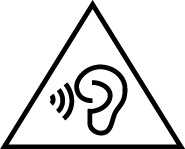

سلامتی کی معلومات
اس دستاویز میں موبائل کمیونیکیشن آلات محفوظ طور پر چلانے کے بارے میں اہم معلومات شامل ہے۔ ہو سکتا ہے کچھ معلومات آپ کے آلہ پر لاگو نہ ہوں۔
اپنا آلہ محفوظ طور پر اور ٹھیک سے چلانے کو یقینی بنانے اور اپنا آلہ ٹھیک سے ضائع کرنے کا طریقہ سیکھنے کیلئے اپنا آلہ استعمال کرنے سے پہلے براہ کرم سلامتی سے متعلق سبھی معلومات بغور پڑھیں۔
الیکٹرانک آلہ
اگر آلہ کا استعمال ممنوع ہو تو اپنا آلہ استعمال نہ کریں۔ آلہ استعمال نہ کریں اگر ایسا کرنا خطرے یا دیگر الیکٹرانک آلات کے ساتھ مداخلت کا سبب ہو۔
طبی ڈیوائسز کے ساتھ مداخلت
- ہسپتالوں اور نگہداشت صحت سہولیات کے ذریعہ مقرر کيے گئے اصول اور ضوابط کی پابندی کریں۔ ممنوعہ جگہوں پر اپنے ڈیوائس کو استعمال نہ کریں۔
- کچھ وائرلیس ڈیوائسز سماعتی آلات یا پیس میکر س کی کارکردگی کو متاثر کرسکتے ہیں۔ مزید معلومات کے لیے اپنے سروس فراہم کنندہ سے رجوع کریں۔
- پیس میکر بنانے والے اس امر کی تجویز کرتے ہیں کہ ڈیوائس اور پیس میکر کے بیچ کم سے کم 15سنٹی میٹر کی دوری برقرار رکھی جائے تاکہ پیس میکر کے ساتھ امکانی خلل کو روکا جا سکے۔ اگر پیس میکر استعمال کر رہے ہوں تو، ڈیوائس کو پیس میکر کی مخالف سمت میں رکھیں اور ڈیوائس کو اپنے سامنے والی جیب میں لے کر نہ چلیں۔
- یہ آلہ ایک طبی آلہ نہیں ہے۔ صحت سے متعلقہ ایپس کو طبی صورتحال کی پیشین گوئی کرنے، تشخیص کرنے یا علاج کرنے کیلئے نہیں ڈیزائن کیا گیا ہے۔
سماعت سے متعلق رہنما ہدایات
-  سماعت کے ممکنہ نقصان سے بچنے کے لیے، زیادہ لمبے دورانیے کے لیے زیادہ تیز آواز میں مت سنیں۔
- زیادہ والیوم پر ہیڈ سیٹ استعمال کرنے سے آپ کی سماعت کو نقصان پہنچ سکتا ہے۔ اس خطرے کو کم کرنے کے لیے، ہیڈسیٹ کی آواز کم کرکے ایک محفوظ اور آرام دہ سطح پر کریں۔
- گاڑی چلاتے وقت تیز والیوم کی زد میں آنا انتشار توجہ کا باعث ہو سکتا ہے اور کسی حادثے کے آپ کے خطرے کو بڑھا سکتا ہے۔
آتش گیر اور دھماکہ خیز مادوں والی جگہیں
- آلہ کو وہاں استعمال نہ کریں جہاں آتش گیر مواد یا دھماکہ خیز مواد کو اسٹور کیا جاتا ہے (مثلاً، گیس اسٹیشن، تیل ڈپو یا کیمیکل پلانٹ میں)۔ ان ماحول میں آپ کا آلہ استعمال کرنے سے دھماکہ یا آگ کا جوکھم بڑھ جاتا ہے۔
- ممکنہ طور پر دھماکہ خیز ماحول میں ہونے پر اپنا آلہ بند کر لیں۔ بیٹری کو نہ نکالیں، کیونکہ اس میں آگ کا خطرہ شامل ہوتا ہے۔ اس کے علاوہ، متن یا علامات میں اشارہ کردہ ہدایات کو فالو کریں۔
- ڈیوائس کو آتش گیر سیال، گیسوں، یا دھماکہ خیز مادوں کے ساتھ کنٹینر میں اسٹور یا نقل و حمل نہ کریں۔
ٹریفک سلامتی
- آلہ استعمال کرتے وقت مقامی قوانین و ضوابط کا مشاہدہ کریں۔ حادثات کا جوکھم کم کرنے کیلئے، ڈرائیونگ کرتے وقت اپنا وائرلیس آلہ استعمال نہ کریں۔
- گاڑی چلانے پر توجہ مرکوز کریں۔ آپ کی پہلی ذمہ داری بحفاظت گاڑی چلانا ہے۔
- گاڑی چلاتے وقت ڈیوائس کو ہولڈ نہ کریں۔ ہینڈز فری والے لوازمات استعمال کریں۔
- جب آپ کو کسی کال کا جواب دینا ضروری ہو تو بحفاظت سڑک کے کنارے ہوں اور پہلے گاڑی کو پارک کریں۔
- RF سگنلز موٹر گاڑیوں کے الیکٹرانک سسٹمز پر اثر ڈال سکتے ہیں۔ مزید معلومات کے لیے، گاڑی بنانے والے سے رجوع کریں۔
- ڈیوائس کو گاڑی میں ایئر بیگ کے اوپر یا ایئر بیگ کے صف بندی والے حصے میں نہ رکھیں۔ ایسا کرنے سے آپ کو ایئر بیگ کے پھولنے پر پیدا ہونے والی تیز قوت کے سبب تکلیف پہنچ سکتی ہے۔
- طیارہ میں پرواز کرتے وقت یا سوار ہونے سے بالکل پہلے، اپنا آلہ صرف فراہم کردہ ہدایات کے مطابق استعمال کریں۔ کسی طیارہ میں وائرلیس آلہ استعمال کرنے سے وائرلیس نیٹ ورک معطل ہو سکتا ہے، طیارہ کی کارروائی میں نقصان ہو سکتا ہے یا غیر قانونی ہو سکتا ہے۔
- سائیکل چلاتے، دوڑتے یا چہل قدمی کرتے وقت ہیڈفونز استعمال نہ کریں کیونکہ اس سے آپ کی توجہ بھٹک سکتی ہے اور یہ ٹریفک حادثہ کا سبب بن سکتا ہے۔
آپریٹنگ کا ماحول
- اپنے آلہ کے حصوں یا داخلی سرکٹس میں نقصان کو روکنے کیلئے، اسے دھول، دھوئیں، گیلے یا گندے ماحول میں یا مقناطیسی فیلڈز کے قریب استعمال نہ کریں۔
- بجلی کی وجہ سے ہونے والے ممکنہ خطرہ سے اپنے آلہ کی حفاظت کرنے کیلئے، طوفان برق و باراں کے دوران اسے استعمال نہ کریں۔
- آلہ اور لوازمات کو سورج کی روشنی براہ راست روشنی سے دور ہوا دار اور ٹھنڈی جگہ میں رکھیں۔ اپنے آلہ کو تولیے یا دیگر اشیاء میں نہ لپیٹیں یا نہ ڈھکیں۔ آلہ کو باکس یا بیگ جیسے گرمی کے کم انتشار والے کنٹینر میں نہ رکھیں۔
- یہ آلہ اور اس کا چارجر سطح کے درجۂ حرارت پر نگاہ رکھنے والے حفاظتی معیارات کی مطابقت کرتے ہیں۔ آپ کا آلہ گرم ہو سکتا ہے، یہ ایک عام مظہر ہے۔ اپنے چمڑے کو زیادہ دیر کیلئے گرم سطح پر رکھنا پریشانی یا کم درجۂ حرارت کی جلنے کی علامات کا سبب بن سکتا ہے (مثلاً سرخ دھبے یا دانے)۔ اگر آپ گرمی کی کمزور حساسیت سے متاثر ہوں تو براہ کرم احتیاط برتیں۔ جب آلہ زیادہ دیر سے استعمال ہو رہا ہو یا زیادہ دیر تک چارجر سے منسلک ہو تو آلہ یا چارجر چھونے سے بچیں۔ مثلاً، آلہ چارج ہوتے وقت اسے اپنے جسم کے اندر یا اپنے لحاف یا تکیہ کے نیچے نہ رکھیں۔
- اپنے ڈیوائس کو طویل وقفے تک براہ راست دھوپ کی زد میں (جیسے کار کے ڈیش بورڈ پر) پر نہ رکھیں۔
- اپنے ڈیوائس یا لوازمات کو آگ یا بجلی کے جھٹکوں کے خطرات سے بچانے کے لیے، بارش اور نمی سے بچیں۔
- ڈیوائس کو گرمی اور آگ کے مآخذ جیسے ہیٹر، مائیکرو ویو اوون، اسٹور، پانی والے ہیٹر، ریڈیئیٹر یا موم بتی سے دور رکھیں۔
- ایئر پیس یا اسپیکر کے قریب دھار دار دھات کی اشیاء جیسے پن نہ رکھیں۔ ایئر پیس ان چیزوں کو راغب کر سکتا ہے اور اس کے نتیجے میں مضرت لاحق ہو سکتی ہے۔
- اپنے ڈیوائس کے کیمرہ کا فلیش براہ راست لوگوں یا پالتو جانوروں کی آنکھوں میں استعمال نہ کریں۔ بصورت دیگر بصارت سے عارضی محرومی ہو سکتی ہے یا آنکھوں کو نقصان پہنچ سکتا ہے۔
- دہرائی جانے والی کارروائیاں کرتے وقت (مثلاً گیم کھیلتے وقت)، آپ کو کبھی کبھی آپ کے ہاتھوں، بازؤوں، کلائیوں، کندھوں، گلے یا آپ کے جسم کے دیگر حصوں میں پریشانی محسوس ہو سکتی ہے۔ اگر آپ کو کسی پریشانی کا سامنا ہوتا ہے تو استعمال بند کر دیں اور کسی ڈاکٹر سے مشورہ کریں۔
- اندھیرے یا غیر مستحکم ماحول میں اسکرین کو نہ گھوریں۔ آنکھیں لال ہونے سے بچانے کیلئے، اسکرین کے بہت زیادہ قریب نہ ہوں یا زیادہ دیر تک اسکرین نہ گھوریں۔ اگر آپ کو کسی پریشانی کا سامنا ہوتا ہے تو استعمال بند کر دیں اور کسی ڈاکٹر سے مشورہ کریں۔
- اگر آپ کو آلہ میں استعمال کردہ پینٹ، میٹل یا دیگر مواد سے الرجی ہے تو آپ کو چمڑے کی الرجی یا دیگر پریشانی کا سامنا ہو سکتا ہے۔ اگر ایسا ہے تو استعمال بند کر دیں اور کسی ڈاکٹر سے مشورہ کریں۔
- کیبلز کو اپنے جسم یا آس پاس کی اشیاء سے نہ لپیٹیں۔ اپنے آپ یا دوسروں کو چوٹ سے بچانے کیلئے چلنے یا منتقل ہوتے وقت اپنے آس پاس کی چیزوں پر دھیان دیں۔
- اس بات کو یقینی بنانے کیلئے کہ آپ اپنے آپ کو زخمی نہیں کرتے ہیں یا اپنے آلہ کو نقصان نہیں پہنچاتے ہیں، آلہ کو اپنی جیب، بیلٹ یا آرم بینڈ میں رکھتے وقت اپنے آس پاس کی چیزوں پر توجہ دیں۔
- بچوں یا پالتو جانوروں کو ڈیوائس یا لوازمات کو دانت سے کاٹنے یا چوسنے کی اجازت نہ دیں۔ ایسا کرنے سے بیٹری خراب ہو سکتی ہے یا اس میں دھماکہ ہو سکتا ہے۔
بچوں کی حفاظت
- بچوں کی سلامتی کے تعلق سے سبھی احتیاط اپنائیں۔ بچوں کو آلہ یا اس کے لوازمات کے ساتھ کھیلنے کی اجازت دینا خطرناک ہو سکتا ہے۔ آلہ میں جدا کرنے کے قابل حصے شامل ہوتے ہیں جس سے دم گھٹنے کا خطرہ موجود ہوسکتا ہے۔ بچوں سے دور رکھیں۔
- آلہ اور اس کے لوازمات بچوں کے استعمال کیلئے نہیں ہیں۔ بچوں کو آلہ صرف بالغوں کی نگرانی میں استعمال کرنا چاہیے۔
لوازمات
- غیر منظور شدہ یا بے جوڑپاور اڈاپٹر، چارجر یا بیٹری استعمال کرنے سے آپ کے آلہ کو نقصان پہنچ سکتا ہے، اس کی میعاد کم ہو سکتی ہے یا یہ آگ، دھماکہ یا دیگر نقصانات کا سبب بن سکتا ہے۔
- آلہ کے مینوفیکچرر کے ذریعے اس ماڈل کے ساتھ استعمال کرنے کیلئے منظور شدہ لوازمات ہی منتخب کریں۔ لوازمات کی کوئی دیگر قسم استعمال کرنے سے وارنٹی ختم ہو سکتی ہے، مقامی قوانین و ضوابط کی خلاف ورزی ہو سکتی ہے اور یہ خطرناک ہو سکتا ہے۔ اپنے علاقے میں منظور شدہ لوازمات کی دستیابی کے بارے میں معلومات کیلئے براہ کرم اپنے خوردہ فروش سے رابطہ کریں۔
چارجر کی سلامتی
- آلہ چارج کرتے وقت، اس بات کو یقینی بنائیں کہ پاور اڈاپٹر کا پلگ آلات کے قریب ایک ساکٹ میں لگا ہوا ہے اور یہ آسانی سے قابل رسائی ہے۔
- استعمال میں نہ ہونے پر چارجر کا پلگ الیکٹریکل آؤٹ لیٹس اور آلہ سے جدا کریں۔
- چارجر کو نہ گرائیں یا اس پر کوئی اثر نہ ڈالیں۔
- USB کیبل کو ایک ہی جگہ میں بار بار یا بہت زیادہ نہ موڑیں۔ USB کیبل کو درست جہت میں داخل کریں۔
- ایک زاویہ سے USB کیبل داخل نہ کریں یا کیبل کے آخر میں USB کنیکٹر کی جگہ سے اسے نہ ہٹائیں۔ USB کیبل اور اس کے کنیکٹر کی باقاعدگی کے ساتھ معائنہ کیاجانا چاہیے۔ اگر نقصان کی کوئی علامات ہیں تو کیبل کا استعمال فوری طور پر روک دیں۔
- چارجنگ پورٹ کو شارٹ سرکٹس سے بچنے کیلئے سیال، دھول، پاؤڈر، ملبہ اور ایصالی مواد سے دور رکھیں، جو تحلیل ہونے، بد رنگی، پگھلنے، جلنے اور آلہ کے دوسرے نقصان کا سبب بن سکتا ہے یا آگ کی لگ سکتی ہے۔
- اگر چارجر پلگ، کیسنگ یا کیبل خراب ہو جاتا ہے تو فوری طور پر اس کا استعمال روکیں۔ مسلسل استعمال الیکٹرک شاک یا آگ کی وجہ بن سکتا ہے۔
- گیلے ہاتھوں سے بجلی کا تار نہ چھوئیں یا چارجر منقطع کرنے کیلئے بجلی کا تار کھینچیں۔
- آلہ یا چارجر گیلے ہاتھوں سے نہ چھوئیں۔ ایسا کرنا شارٹ سرکٹس، خرابی یا الیکٹرک شاکس کا سبب بن سکتا ہے۔
- اگر آپ کا چارجر پانی، دیگر مائع جات یا بہت زیادہ نمی کی زد میں آیا ہے، تو اسے مجاز سروس سینٹر پر معائنے کیلئے لے جائیں۔
- اس بات کو یقینی بنائیں کہ چارجر IEC60950-1/EN60950-1/UL60950-1 میں کلاز 2.5 کے تقاضوں کو پورا کرتا ہے اور اسے قومی یا مقامی معیارات کے مطابق ٹیسٹ اور منظور کر لیا گیا ہے۔
- آلہ کو صرف USB-IF لوگو والے پروڈکٹس کے ساتھ یا USB-IF تعمیل سے متعلق پروگرام کی تکمیل کے ساتھ مربوط کریں۔
بیٹری کی سلامتی
- بیٹری کے پولز کو کلیدوں، زیور، یا دیگر میٹل کے موادات جیسے کنڈکٹرز کے ساتھ نہ مربوط کریں۔ ایسا کرنے سے بیٹری میں شارٹ سرکٹ ہو سکتا ہے اور یہ زخمی ہونے یا جلنے کا سبب بن سکتا ہے۔
- بہت زیادہ گرمی اور براہ راست سورج کی روشنی سے بیٹری کو دور رکھیں۔ اسے مائیکرو ویو اووینز، اسٹوو یا ریڈیئٹرز جیسے گرم کرنے والے آلات پر یا ان میں نہ رکھیں۔ زیادہ گرم ہونے پر بیٹریاں پھٹ سکتی ہیں۔
- بیٹری میں ترمیم یا اسے دوبارہ بنانے، اس میں باہری اشیاء داخل کرنے یا اسے پانی یا دیگر سیال میں ڈبونے یا لے جانے کی کوشش نہ کریں۔ ایسا کرنے سے آگ لگ سکتی ہے، دھماکہ یا دوسرے نقصانات ہو سکتے ہیں۔
- اگر بیٹری لیک ہو جاتی ہے تو اس بات کو یقینی بنائیں کہ الیکٹرو لائٹ براہ راست آپ کے چمڑے یا آنکھوں کے رابطہ میں نہ آئے۔ اگر الیکٹرو لائٹ آپ کے چمڑے سے لگ جاتی ہے یا آپ کی آنکھوں میں اسپلیش ہو جاتی ہے تو فوری طور پر صاف پانی کا چھڑکاؤ کریں اور کسی ڈاکٹر سے مشورہ کریں۔
- چارج یا اسٹور کرتے ہوئے بیٹری کی شکل بدلنے، رنگ تبدیل ہونے یا زیادہ گرم ہونے کی صورت میں یا اگر آلہ کے اسٹینڈ بائی وقت میں نمایاں کمی ہوتی ہے تو بیٹری خراب ہو سکتی ہے۔ مسلسل استعمال کی وجہ سے بیٹری لیک ہو سکتی ہے، اس میں آگ لگ سکتی ہے یا اس میں دھماکہ ہو سکتا ہے۔
- بیٹریوں کو آگ میں نہ رکھیں کیونکہ ان میں دھماکہ ہو سکتا ہے۔ خراب بیٹریوں میں بھی دھماکہ ہو سکتا ہے۔
- استعمال شدہ بیٹریوں کو مقامی ضوابط کے مطابق ضائع کریں۔ بیٹری کے غلط استعمال سے آگ لگ سکتی، دھماکہ ہو سکتا یا دوسرے نقصانات ہو سکتے ہیں۔
- بچوں یا پالتو جانوروں کو بیٹری کو کاٹنے یا چاٹنے کی اجازت نہ دیں۔ ایسا کرنے سے بیٹری خراب ہو سکتی ہے یا اس میں دھماکہ ہو سکتا ہے۔
- بیٹری کو ٹکڑے ٹکڑے نہ کریں یا اس میں سوراخ نہ کریں یا اسے زیادہ باہری دباؤ میں نہ لے جائیں۔ ایسا کرنا شارٹ سرکٹ یا زیادہ گرم ہونے کا سبب بن سکتا ہے۔
- کسی غلط ماڈل کے ساتھ بیٹری تبدیل کرنے سے دھماکہ ہو سکتا ہے۔
- یہ ڈیوائس بلٹ ان بیٹری پر مشتمل ہوتی ہے۔ بیٹری کو اپنے طور پر تبدیل کرنے کی کوشش نہ کریں۔ بصورت دیگر، ہو سکتا ہے کہ بیٹری ٹھیک طرح سے کام نہ کرے یا اس سے بیٹری کو نقصان پہنچ سکتا ہے۔ آپ کی ذاتی حفاظت کے لیے اور یہ یقینی بنانے کے لیے کہ آپ کی ڈیوائس صحیح طرح سے کام کرتی ہے، آپ کو سختی سے تجویز کیا جاتا ہے کہ آپ تبدیلی کے لیے کسی مجاز سروس سینٹر سے رابطہ کریں۔
- صرف اہل چارجنگ سسٹم کے ساتھ بیٹری استعمال کریں۔ بیٹری کو صرف اہل بیٹری کے ساتھ ادل بدل کریں۔ غیر اہل بیٹری یا چارجر کا استعمال آگ، دھماکہ، لیک یا دوسرے نقصانات کا سبب بن سکتا ہے۔
- بیٹری کو الگ الگ نہ کریں یا نہ کھولیں، توڑیں، موڑیں یا شکل تبدیل کریں، پنکچر کریں یا کاٹیں۔ بصورت دیگر، یہ الیکٹرو لائٹ کے لیکیج، زیادہ گرم ہونے، آگ لگنے یا دھماکہ کا سبب بن سکتا ہے۔
- بیٹری کے پولز کو ملائیں نہیں یا بیٹری کو الگ الگ نہ کریں۔ ایسا کرنا الیکٹرو لائٹ کے لیکیج، زیادہ گرمی، آگ یا دھماکے کا سبب بن سکتا ہے۔
صفائی اور دیکھ بھال
- آلہ اور لوازمات کو سوکھا رکھیں۔ اسے مائیکرو ویو اووین یا ہیئر ڈرائر جیسے باہری گرمی کے ذریعہ سے سکھانے کی کوشش نہ کریں۔
- اپنا آلہ کافی دیر تک چارج کرنے یا بیٹری کو زیادہ دیر تک بغیر استعمال کے چھوڑ دینے سے بیٹری کی میعاد کم ہو سکتی ہے اور کارکردگی میں کمی آسکتی ہے۔
- اپنا آلہ یا لوازمات شدید گرمی یا سردی میں نہ لائیں۔ یہ حالات ٹھیک سے کام کرنے میں مداخلت کر سکتے ہیں اور ان کی وجہ سے آگ لگ سکتی یا دھماکہ ہو سکتا ہے۔
- ٹکرانے سے بچیں، یہ آلہ کی خرابی، زیادہ گرم ہونے، اس میں آگ لگنے یا دھماکہ ہونے کا سبب بن سکتا ہے۔
- آلہ کی صفائی یا دیکھ بھال سے پہلے، اس کا استعمال روک دیں، سبھی ایپلیکیشنز کو روک دیں اور اس سے مربوط سبھی کیبلز کو منقطع کر دیں۔
- آلہ یا لوازمات کو صاف کرنے کیلئے کوئی کیمیکل ڈیٹرجنٹ، پاؤڈر یا دوسرے کیمیکل اجزاء (مثلاً الکحل اور بینزین) استعمال نہ کریں۔ ان اشیاء سے حصوں کو نقصان ہو سکتا ہے یا آگ کا نقصان ہو سکتا ہے۔ آلہ اور لوازمات کو صاف کرنے کیلئے ایک صاف، نرم اور سوکھا کپڑا استعمال کریں۔
- زیادہ دیر تک مقناطیسی پٹی والے کارڈز (مثلاً بینک کارڈز) آلہ کے رابطہ میں نہ چھوڑیں کیونکہ آلہ کا مقناطیسی خانہ مقناطیسی پٹی کو نقصان پہنچا سکتی ہے۔
- ڈیوائس اور اس کے لوازمات کو مت کھولیں یا انہیں دوبارہ تیار نہ کریں۔ ایسا کرنا وارنٹی کو ختم کر دیتا ہے اور بنانے والے کو نقصان کی جوابدہی سے آزاد کر دیتا ہے۔ نقصان کی صورت میں، معاونت یا مرمت کے لیے کسی مجاز سروس سینٹر سے رابطہ کریں۔
- کسی سخت چیز سے ٹکرا کر یا کسی سخت اثر کو جھیل کر اگر آپ کی ڈیوائس خراب ہو جاتی ہے تو کسی ٹوٹے ہوئے حصے کو نہ چھوئیں یا اسے ہٹانے کی کوشش نہ کریں۔ فوری طور پر ڈیوائس کو استعمال کرنا چھوڑ دیں اور کسی مجاز سروس سینٹر سے رابطہ کریں۔
- صحیح سمت میں داخلہ کو یقینی بنانے کیلئے SIM کارڈ، میموری کارڈ یا ڈیٹا کیبل داخل کرتے وقت احتیاط برتیں۔ ڈیٹا منتقل کرتے وقت، ڈیٹا کیبل کو نہ ہٹائیں کیونکہ اس سے ڈیٹا کو نقصان پہنچ سکتا ہے یا یہ آپ کے آلہ اور اس کے لوازمات کو نقصان پہنچا سکتا ہے۔
نیٹ ورک کنیکشن
کچھ خصوصیات مربوط شدہ نیٹ ورک کی قسم سے متعلقہ ہو سکتی ہیں۔ براہ کرم استعمال سے قبل مقامی نیٹ ورک کنیکشن کو یقینی بنائیں۔
ہنگامی کالیں
ایمرجنسی کالز کی دستیابی آپ کے سیلولر نیٹ ورک کے معیار، سروس فراہم کنندہ کی پالیسی اور مقامی قوانین و ضوابط کے ساتھ مشروط ہے۔ طبی ہنگامی حالات جیسے اہم مواصلتوں کیلئے کبھی بھی صرف اپنے آلہ پر بھروسہ نہ کریں۔ نیٹ ورک سگنل سے خالی علاقوں یا کمزور نیٹ ورک سگنل والے علاقوں میں جانے سے پہلے ہنگامی حالت والے سروسز سے رابطہ کرنے کے متبادل طریقے کی آپ کو منصوبہ بندی کرنی چاہیے۔
کالنگ فنکشن والے ڈیوائسیز پر قابل اطلاق ہیں۔
ماحولیاتی تحفظ
- آلہ اور اس کے لوازمات (اگر شامل ہیں)، مثلاً پاور اڈاپٹر، ہیڈ سیٹ اور بیٹری کو گھریلو کچرے کے ساتھ ضائع نہیں کیا جانا چاہیے۔
- آلہ اور اس کے لوازمات کو ضائع کرنا مقامی ضوابط کے ساتھ مشروط ہے۔ مکمل جمع آوری اور ری سائیکلنگ کا تعاون کریں۔
ذاتی معلومات اور ڈیٹا کی سکیورٹی
آپ کے ڈیوائس پر کچھ فنکشنز یا تھرڈ پارٹی ایپلیکیشنز کے استعمال کے نتیجے میں آپ کی ذاتی معلومات یا تو غائب ہو سکتی ہے یا دوسروں کے لیے قابل رسائی بن سکتی ہے۔ آپ کے ذاتی معلومات کے تحفظ میں اپنی مدد کے لیے درج ذیل اقدامات استعمال کریں:
- غیر مجاز استعمال کو روکنے کے لیے اپنا ڈیوائس ایک محفوظ جگہ میں رکھیں۔
- اپنے ڈیوائس کی اسکرین لاک کرنے پر سیٹ کریں اور ایک پاس ورڈ یا ان لاک کرنے کا پیٹرن سیٹ کریں۔
- اپنے SIM کارڈ، میموری کارڈ، یا اپنے ڈیوائس کی میموری میں اسٹور کردہ ذاتی معلومات کا وقفہ وقفہ سے بیک اپ لیتے رہیں۔ اگر آپ ایک مختلف ڈیوائس تبدیل کرتے ہیں تو، اپنے پرانے ڈیوائس پر موجود کوئی ذاتی ڈیٹا یقینی طور پر منتقل کر لیں یا ختم کریں۔
- اپنے ڈیوائس کو وائرس سے متاثر ہونے سے بچانے کے لیے اجنبیوں کی جانب سے پیغامات یا ای میلز کو نہ کھولیں۔
- انٹرنیٹ براؤز کرنے کے لیے اپنا ڈیوائس استعمال کرتے وقت، ایسی ویب سائٹس ملاحظہ نہ کریں جو سکیورٹی کا خطرہ پیدا کر سکتی ہیں تاکہ آپ کی ذاتی معلومات چوری ہونے سے بچ جائے۔
- اگر آپ پورٹیبل Wi-Fi ہاٹ اسپاٹ یا بلوٹوتھ جیسی سروسز کا استعمال کرتے ہیں، تو غیر مجاز رسائی کو روکنے کے لیے ان سروسز کے لیے پاس ورڈ سیٹ کریں۔ جب یہ سروسز استعمال میں نہ ہوں تو انہیں آف کر دیں۔
- ڈیوائس کا سکیورٹی سافٹ ویئر انسٹال کریں اور وائرس کے مدنظر باقاعدگی سے اسکین کریں۔
- تھرڈ پارٹی ایپلیکیشنز قانونی ماخذ سے حاصل کرنے کو یقینی بنائیں۔ ڈاؤن لوڈ کردہ تھرڈ پارٹی ایپلیکیشنز کو وائرسوں کے مدنظر اسکین کیا جانا چاہیے۔
- Honor یا مجاز فریق ثالث کے ایپلیکیشن فراہم کنندگان کے جاری کردہ سیکیورٹی سافٹ ویئر یا پیچز انسٹال کریں۔
- ڈیوائس اپ ڈیٹ کرنے کے لیے آپ کا غیر مجاز فریق ثالث سافٹ ویئر استعمال کرنا آپ کے ڈیوائس کو خراب کر سکتا ہے یا آپ کی ذاتی معلومات کو خطرے میں ڈال سکتا ہے۔ یہ تجویز کیا جاتا ہے کہ آپ اپنی ڈیوائس کی آن لائن اپ ڈیٹ والی خصوصیت کے ذریعے اپ ڈیٹ کریں یا Honor کی جانب سے اپنی ڈیوائس کے ماڈل کے لیے باضابطہ اپ ڈیٹ پیکیجز ڈاؤن لوڈ کریں۔
- کچھ ایپلیکیشنز مقام کی معلومات طلب اور اس کی ترسیل کرتی ہیں۔ نتیجتاً، فریق ثالث آپ کی مقامی معلومات شیئر کرنے پر قادر ہو سکتاہے۔
- کچھ فریق ثالث کے ایپلیکیشن فراہم کنندگان اپنے پروڈکٹس اور سروسز کو بہتر بنانے کے لیے آپ کے ڈیوائس پر پہچان اور اشخیصی معلومات کو اکٹھا کر سکتے ہیں۔
ضیاع اور ری سائیکلنگ کی معلومات

آپ کے پروڈکٹ، بیٹری، ادب یا پیکیجنگ پر کراس کے نشان والے پہیے والے کوڑے دان کی علامت آپ کو یاد دلاتی ہے کہ سبھی الیکٹرانک پروڈکٹس اور بیٹریوں کو ان کی کام کی میعاد ختم ہونے کے بعد الگ کوڑے جمع کرنے کی جگہوں پر لے جانا ضروری ہے؛ ان کو گھریلو کوڑے کے ساتھ عام کوڑے کے سلسلے میں ضائع نہیں کیا جانا چاہیے۔ کوڑے والے الیکٹریکل اور الیکٹرانک آلہ (WEEE) اور بیٹریوں کو مقامی قوانین کے مطابق علیحدہ ری سائیکل کرنے کیلئے متعینہ جمع آوری پوائنٹ یا سروس کا استعمال کر کے آلہ کو ضائع کرنا صارف کی ذمہ داری ہے۔
آپ کی ڈیوائسز کی مناسب کلیکشن اور ری سائیکلنگ کرنے سے یہ یقینی بنانے میں مدد ملتی ہے کہ (EEE) کے کچرے کو ایسے انداز میں ری سائیکل کیا جاتا ہے جو قابل قدر مواد کو محفوظ رکھتا ہے اور انسانی صحت اور ماحولیات کا تحفظ کرتا ہے، نامناسب ہینڈلنگ، اتفاقی ٹوٹ پھوٹ، خرابی، اور/یا اس کی زندگی ختم ہو جانے پر اس کی نامناسب ری سائیکلنگ صحت اور ماحول کے لیے نقصان دہ ہو سکتی ہے۔ اس بار ے میں مزید معلومات کے لیے کہ اپنے EEE کچرے کو کہاں اور کیسے خالی کرنا ہے، براہ کرم اپنی مقامی اتھارٹیز ، ریٹیلر یا گھریلو کچرے کو ضائع کرنے سے متعلق خدمات سے رابطہ کریں، یا ویب سائٹ https://www.hihonor.com/ ملاحظہ کریں۔
خطرناک مادوں کو کم کرنا
یہ ڈیوائس اور کوئی بھی برقی لوازمات الیکٹریکل اور الیکٹرانک ڈیوائسز میں مخصوص ضرر رساں مادوں کے استعمال کی پابندی پر قابل اطلاق مقامی اصولوں کے عین مطابق ہیں، جیسے EU REACH، RoHS اور بیٹریز (جہاں شامل ہوں وہاں) کے ضوابط۔ REACH اور RoHS کے بارے میں مطابقت کے اعلان کے لیے، براہ کرم ہماری ویب سائٹ https://www.hihonor.com/global/legal/certification/ ملاحظہ کریں۔
قانونی نوٹس
Honor کی پیشگی تحریری منظوری کے بغیر کسی بھی شکل میں یا کسی بھی ذریعہ سے اس کتابچے کا کوئی بھی حصہ دوبارہ بنایا یا منتقل نہیں کیا جا سکتا ہے۔
اس کتابچے میں بیان کردہ پراڈکٹ میں Honor اور ممکنہ لائسنس یافتہ افراد کا کاپی رائٹ یافتہ سافٹ ویئر شامل ہو سکتا ہے۔ صارفین مذکورہ سافٹ ویئر کسی بھی طرح سے دوبارہ نہیں بنائیں گے، اس کی تقسیم، اس میں ترمیم، اس سے چھیڑ چھاڑ، اسے الگ الگ، غیر مرموز، ایکسٹریکٹ، ریورس انجینیئرنگ نہیں کریں گے، لیز پر نہیں دیں گے، تفویض نہیں کریں گے یا ضمنی لائسنس نہیں دیں گے، سوائے اس صورت کے کہ اگر اس طرح کی پابندیاں قابل اطلاق قوانین کے ذریعے ممنوع ہوں یا اس طرح کی کارروائیوں کی متعلقہ کاپی رائٹ کے حامل افراد کے ذریعے اجازت ہو۔
نوٹس
پروڈکٹ اور اس کے لوازمات کی یہاں بیان کردہ کچھ خصوصیات انسٹال کردہ سافٹ ویئر، مقامی نیٹ ورک کی اہلیتوں اور سیٹنگز پر بھروسہ کرتی ہیں، اور اسی وجہ سے ان کو فعال نہیں کیا جا سکتا ہے یا ان کو مقامی نیٹ ورک آپریٹرز یا نیٹ ورک سروس فراہم کنندگان محدود کر سکتے ہیں۔
اسی وجہ سے، یہاں موجود تفصیلات آپ کے خریدے ہوئے پروڈکٹ اور اس کے لوازمات سے قطعی طور پر مماثل نہیں ہو سکتی ہیں۔
Honor پیشگی نوٹس اور کسی جوابدہی کے بغیر اس کتابچے میں شامل کسی بھی معلومات یا خصوصیات میں تبدیلی یا ترمیم کا حق محفوظ رکھتی ہے۔
فریق ثالث سافٹ ویئر کا بیان
Honor ان فریق ثالث سافٹ ویئر اور ایپلیکیشنز کے دانش ورانہ املاک کی ملکیت نہیں رکھتی جو اس پراڈکٹ کے ساتھ ترسیل کی جاتی ہیں۔ اس لیے، Honor فریق ثالث سافٹ ویئر اور ایپلیکیشنز کی لیے کسی بھی قسم کی کوئی وارنٹی فراہم نہیں کرے گی۔ Honor نہ تو فریق ثالث سافٹ ویئر اور ایپلیکیشنز استعمال کرنے والے کسٹمرز کو تعاون فراہم کرے گی، نہ فریق ثالث سافٹ ویئر اور ایپلیکیشنز کے فنکشنز یا کارکردگی کیلئے ذمہ دار یا جوابدہ ہوگی۔
فریق ثالث سافٹ ویئر اور ایپلیکیشنز سروسز میں کسی بھی وقت مداخلت ہو سکتی ہے یا بند ہو سکتی ہیں، اور Honor کسی مشمول یا سروس کی دستیابی کی ضمانت نہیں دیتی۔ فریق ثالث سروس فراہم کنندگان Honor کی کنٹرول سے باہر کے نیٹ ورک یا منتقلی ٹولز کے ذریعے مشمول اور سروسز فراہم کرتے ہیں۔ قابل اطلاق قانون کے ذریعے زیادہ سے زیادہ مجاز حد تک، یہ واضح طور پر بیان کیا جاتا ہے کہ Honor فریق ثالث سروس فراہم کنندگان کے ذریعے فراہم کردہ سروسز یا فریق ثالث مشمول یا سروسز میں رکاوٹ یا خاتمے کیلئے معاوضہ ادا نہیں کرے گی یا ان کے لیے جوابدہ نہیں ہو گی۔
Honor اس پروڈکٹ پر انسٹال کردہ کسی سافٹ ویئر کے قانونی، معیاری یا کسی دیگر پہلو کیلئے یا متن، تصاویر، ویڈیوز یا سافٹ ویئر وغیرہ کے بشمول لیکن انہی تک محدود نہیں، کسی بھی شکل میں اپ لوڈ یا ڈاؤن لوڈ کردہ فریق ثالث کے کام کیلئے ذمہ دار نہیں ہوگی۔ صارفین کو سافٹ ویئر انسٹال کرنے یا فریق ثالث کے کام اپ لوڈ یا ڈاؤن لوڈ کرنے کی وجہ سے، سافٹ ویئر اور اس پراڈکٹ کے درمیان عدم مطابقت سمیت کسی بھی اور تمام اثرات کے خطرات کا سامنا کرنا ہو گا۔
یہ پراڈکٹ اوپن سورس Android پلیٹ فارم پر مبنی ہے۔ Honor نے پلیٹ فارم میں ضروری تبدیلیاں کی ہیں۔ اسی وجہ سے، ہو سکتا ہے کہ یہ پراڈکٹ معیاری Android پلیٹ فارم کے ذریعے تعاون یافتہ سبھی فنکشنز کے ساتھ تعاون نہ کرے یا فریق ثالث سافٹ ویئر کے ساتھ غیر مطابقت پذیر ہو۔ Honor اس طرح کی کسی مطابقت پذیری کے سلسلے میں کوئی ضمانت یا نمائندگی فراہم نہیں کرتی ہے اور اس طرح کے سبھی معاملات میں تمام جوابدہی کو واضح طور پر خارج کرتی ہے۔
اعلان دستبرداری
اس مینوئل کا سبھی مواد "جیسے ہے" کی بنیاد پر فراہم کیا جاتا ہے۔ قابل اطلاق قانون کے ذریعہ درکار کے علاوہ، کسی بھی طرح کی کسی وارنٹی بدیہی یا مضمر، بشمول، لیکن بلا تحدید، منفعت پذیری اور کسی مخصوص مقصد کیلئے درستگی کی مخفی وارنٹیز، درستگی، معتبریت یا اس مینوئل کے مواد کے تعلق سے نہیں دی جاتی ہیں۔
قابل اطلاق قانون کے ذریعہ اجازت یافتہ زیادہ سے زیادہ حد تک، کسی بھی صورت میں HONOR کسی خاص، اتفاقی، بلا واسطہ یا نتیجتاً نقصانات، یا منافعوں میں کمی، کاروبار، آمدنی، ڈیٹا، خیر سگالی بچت یا متوقع بچت کیلئے ذمہ دار نہیں ہوگا اس بات سے قطع نظر کہ آیا اس طرح کے نقصانات کی پیشن گوئی کی جا سکتی ہے یا نہیں۔
اس کتابچہ میں بیان کردہ پراڈکٹ کے استعمال سے ہونے والی HONOR کی زیادہ سے زیادہ ذمہ داری (یہ تحدید اس حد تک ذاتی چوٹ کیلئے جوابدہی پر لاگو نہیں ہوگی جس طرح کی تحدید پر قابل اطلاق قانون پانبدی عائد کرتا ہے) کو اس رقم تک محدود کیا جائے گا جس کی ادائیگی صارفین اس پراڈکٹ کی خریداری کی لیے کرتے ہیں۔
درآمد اور برآمد کے ضوابط
کسٹمرز سبھی قابل اطلاق برآمد اور درآمد کے قوانین و ضوابط کی تعمیل کریں گے اور سافٹ ویئر اور اس میں موجود تکنیکی ڈیٹا سمیت اس مینوئل میں مذکورہ پروڈکٹ کو برآمد، دوبارہ برآمد یا درآمد کرنے کیلئے سبھی لازمی حکومت کی اجازتیں اور لائسنسز حاصل کرنے کیلئے ذمہ دار ہونگے۔